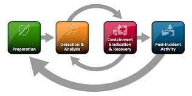
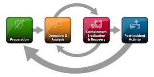
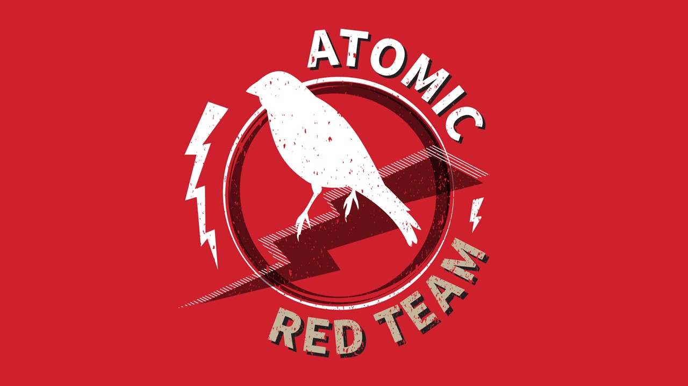
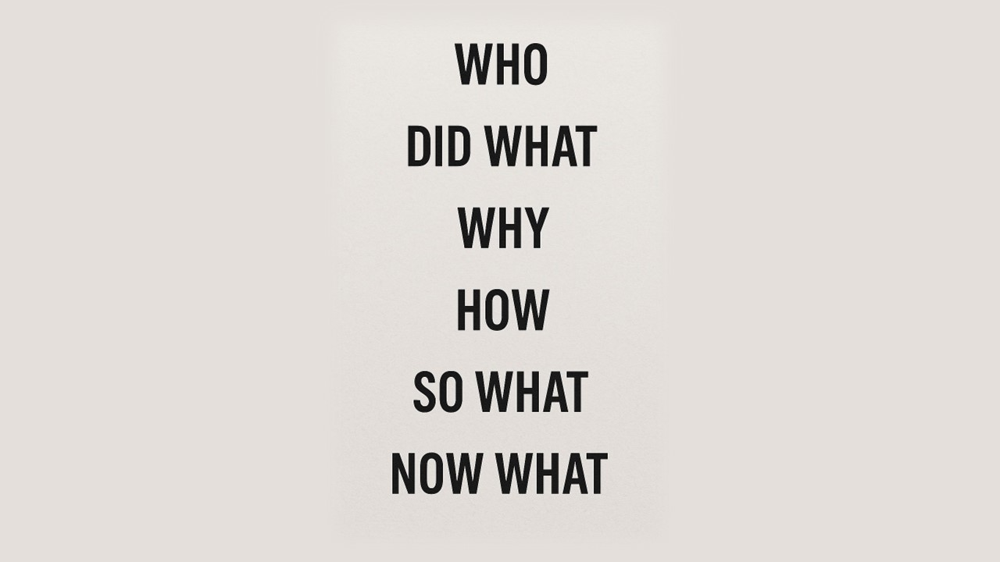

Passionately curious security analyst and former educator with a strong foundation in security monitoring, threat detection, and incident response. Skilled in analyzing alerts from SIEM, M365, IAM, web, email, and endpoint security tools—correlating logs to detect, contain, and remediate adversary activity. Experienced in SOC playbook development, threat hunting, and security automation to enhance response efficiency. Recognized for clear, effective technical writing that improves documentation and enables knowledge transfer across teams. Team-focused and actively contributes to a culture of continuous improvement and security maturity—both on the clock and in the community—by supporting peers and contributing to open-source projects. Brings a unique blend of instructional experience, technical knowledge, and cross-functional collaboration to strengthen organizational resilience.
 

In Progress Digital playbook repo demonstrating overall style of process documentation including incident response playbooks, templates for initial triage checklist, containment guides, timeline building, and additional external resources.
KAPE-powered extraction of forensic artifacts from Windows endpoints for timeline analysis and incident reconstruction. Features sample projects, scripts, and walkthroughs.

Contributed Atomic Red Team Test #13 for T1135: Enumerate Network Shares with Netscan. Currently testing and will create a pull request once validated.

This communication model is adapted from reflective and storytelling frameworks used in education, healthcare, and leadership. It helps responders structure clear, audience-tailored summaries during incident response reporting.

Streamline team workflows by automating recurring security operations tasks with Microsoft List + Power Automate. Auto-updates schedules and emails teams reminders. Can be used for rotating task assignments related to health checks, schedule rule tuning, threat intel reviews and presentations, metrics reporting, on-call schedules, backup validation, alert testing, and other team/cross-team coordination.
Investigate account compromise, insider threats, and phishing activity using the Search-UnifiedAuditLog cmdlet in targeted PowerShell scripts that reduce incident response time and output relevant logs.